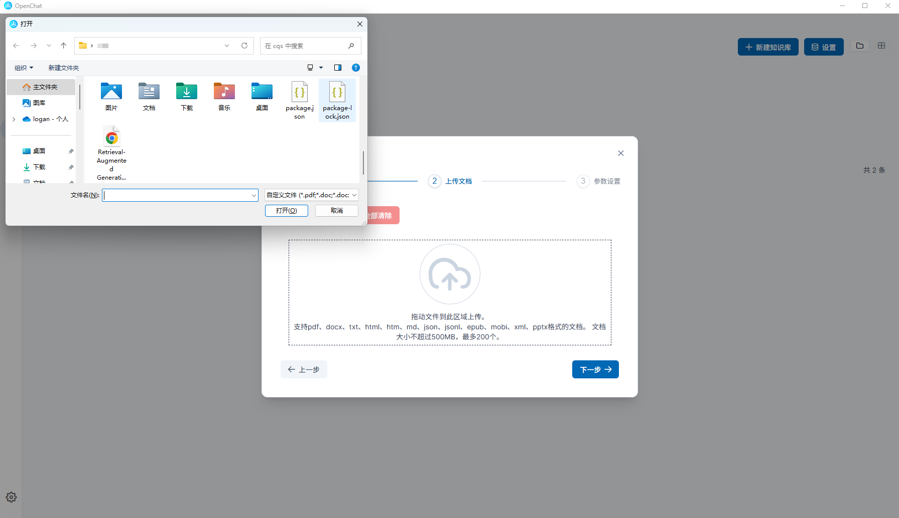

零代码+零风险！中文AI把ChatGPT+翻译神器+员工培训全包了
OpenChat - 开源免费的本地AI解决方案，保护您的数据安全，提供强大的文档处理和智能助手功能
OpenChat - 开源免费的本地AI解决方案，保护您的数据安全，提供强大的文档处理和智能助手功能
100% 本地运行，敏感数据永不外泄，断网也能使用，完全保护您的隐私与机密。
支持百万 Token 长文本解析，PDF/Word/TXT 格式翻译，合同、报告一键搞定。
零代码 DIY 专属 AI 助手，客服、教学、写作等多种场景自由定制。
全新界面、更强模型支持、更贴心功能体验。
新增智能体系统、沉浸式翻译模块和自动更新能力，支持最新 Qwen3 模型，显著提升使用体验。
智能体系统支持个性化助手
文档沉浸式翻译，中英日法韩互译
支持 Qwen3 模型，增强语言理解
模型/检索/安全配置统一管理
启动时自动检测与更新版本
简化部署体验，减少维护成本


“作为律所合伙人，我们处理了大量敏感合同，OpenChat 本地部署让我们放心使用，效率提升300%！”
张律师 - 明德律所合伙人

“Zotero 插件+文献翻译+笔记生成，一键搞定！我的科研效率翻倍。”
李同学 - 清华大学博士生

“开发者模式支持 API 对接，我把旧 NAS 变成 AI 算力中心，团队协作效率大幅提升！”
王工程师 - 科技公司 CTO